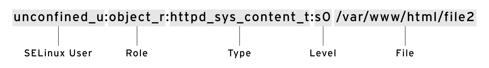
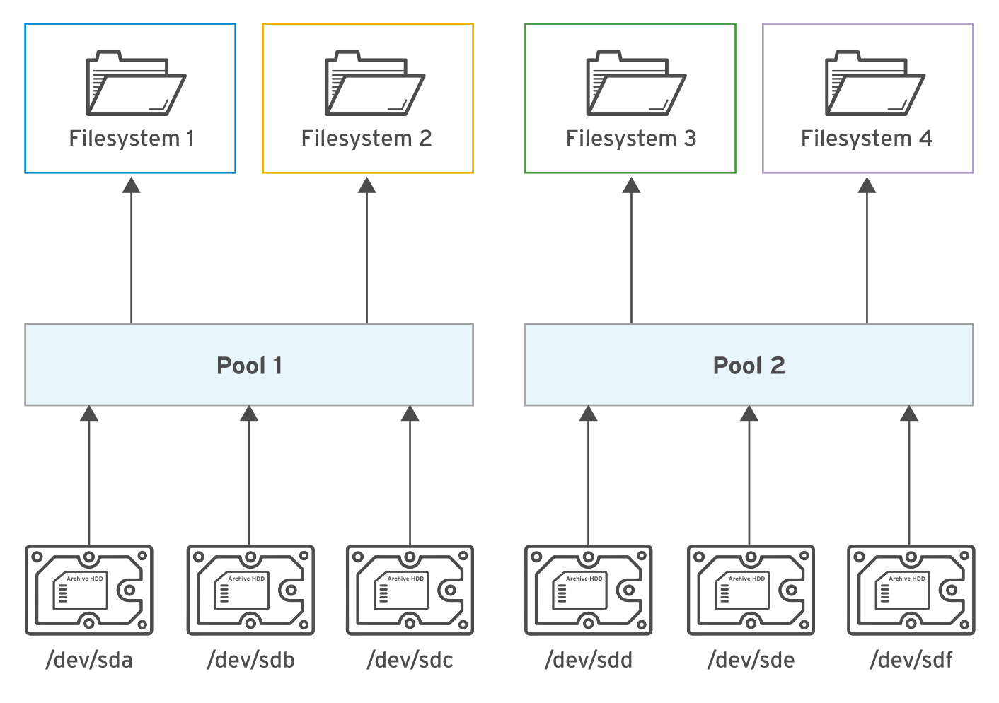

Red Hat System Administration II
Tuning System Performance
**`tuned-adm list`**
Available profiles:
- balanced
- desktop
- latency-performance
- network-latency
- network-throughput
- powersave
- sap
- throughput-performance
- virtual-guest
- virtual-host
Profiles Distributed with Rhel 8
| Tuned Profile | Purpose |
|---|---|
| balanced | Ideal for systems that require a compromise between power saving and performance. |
| desktop | Derived from the balanced profile. Provides faster response of interactive applications. |
| throughput-performance | Tunes the system for maximum throughput. |
| latency-performance | Ideal for server systems that require low latency at the expense of power consumption. |
| network-latency | Derived from the latency-performance profile. It enables additional network tuning parameters to provide low network latency. |
| network-throughput | Derived from the throughput-performance profile. Additional network tuning parameters are applied for maximum network throughput. |
| powersave | Tunes the system for maximum power saving. |
| oracle | Optimized for Oracle database loads based on the throughput-performance profile. |
| virtual-guest | Tunes the system for maximum performance if it runs on a virtual machine. |
| virtual-host | Tunes the system for maximum performance if it acts as a host for virtual machines. |
- The
tunedservice automatically modifies device settings to meet specific system needs based on a pre-defined selected tuning profile. - To revert all changes made to system settings by a selected profile, either switch to another profile or deactivate the
tunedservice. - The system assigns a relative priority to a process to determine its CPU access. This priority is called the
nicevalue of a process. - The
nicecommand assigns a priority to a process when it starts. Therenicecommand modifies the priority of a running process.
Access Control Lists
- ACLs provide fine-grained access control to files and directories.
- The getfacl command displays the ACLs on a file or directory.
- The setfacl command sets, modifies, and removes default and standard ACLs on files and directories.
- Use default ACLs for controlling new files and directories permissions.
- Red Hat Enterprise Linux uses
systemdandudevto apply predefined ACLs on devices, folders, and files.
Managing SELinux Security

- The getenforce and setenforce commands are used to manage the SELinux mode of a system.
- The semanage command is used to manage SELinux policy rules. The restorecon command applies the context defined by the policy.
- Booleans are switches that change the behavior of the SELinux policy. They can be enabled or disabled and are used to tune the policy.
- The sealert displays useful information to help with SELinux troubleshooting.
Managing Storage
Basic
- You use the parted command to add, modify, and remove partitions on disks with the MBR or the GPT partitioning scheme.
- You use the mkfs.xfs command to create XFS file systems on disk partitions.
- You need to add file-system mount commands to
/etc/fstabto make those mounts persistent. - You use the mkswap command to initialize swap spaces.
Advanced
- The Stratis storage management solution implements flexible file systems that grow dynamically with data.
- The Stratis storage management solution supports thin provisioning, snapshotting, and monitoring.
- The Virtual Data Optimizer (VDO) aims to reduce the cost of data storage.
- The Virtual Data Optimizer applies zero-block elimination, data deduplication, and data compression to optimize disk space efficiency.
title: pool list max number file supported
You can create multiple pools from different storage devices. From each pool, you can create one or more file systems. Currently, you can create up to **2^24** file systems per pool.
Managing Logical Volumes

- Allows you to create flexible storage by allocating space on multiple storage devices.
- Physical volumes, volume groups, and logical volumes are managed by a variety of tools such as pvcreate, vgreduce, and lvextend.
- Logical volumes can be formatted with a file system or swap space, and they can be mounted persistently.
- Additional storage can be added to volume groups and logical volumes can be extended dynamically.
Accessing Network-Attached Storage
- Mount and unmount an NFS export from the command line.
- Configure an NFS export to automatically mount at startup.
- Configure the automounter with direct and indirect maps, and describe their differences.
Controlling the Boot Process
- systemctl reboot and systemctl poweroff reboot and power down a system, respectively.
- systemctl isolate
target-name.target switches to a new target at runtime. - systemctl get-default and systemctl set-default can be used to query and set the default target.
- Use
rd.breakon the kernel command line to interrupt the boot process before control is handed over from theinitramfs. The root file system is mounted read-only under/sysroot. - The emergency target can be used to diagnose and fix file-system issues.
Managing Network Security
- The
netfiltersubsystem allows kernel modules to inspect every packet traversing the system. All incoming, outgoing or forwarded network packets are inspected. - The use of firewalld has simplified management by classifying all network traffic into zones. Each zone has its own list of ports and services. The
publiczone is set as the default zone. - The
firewalldservice ships with a number of pre-defined services. They can be listed using the firewall-cmd --get-services command. - Network traffic is tightly controlled by the SELinux policy. Network ports are labeled. For example, port
22/TCPhas the labelssh_port_tassociated with it. When a process wants to listen on a port, SELinux checks to see whether the label associated with it is allowed to bind that port label. - The semanage command is used to add, delete, and modify labels.
Managing Virtual Machines with Cockpit
Required package name : cockpit-machines
Install the cockpit-machines package to add the Virtual Machines menu to Cockpit.
[root@host ~]# yum install cockpit-machines
If Cockpit is not already running, start and enable it.
[root@host ~]# systemctl enable --now cockpit.socket
Containers
- Containers provide a lightweight way to distribute and run an application and its dependencies that may conflict with software installed on the host.
- Containers run from container images that you can download from a container registry or create yourself.
- Podman, provided by Red Hat Enterprise Linux, directly runs and manages containers and container images on a single host.
- Containers can be run as
root, or as non-privileged rootless containers for increased security. - You can map network ports on the container host to pass traffic to services running in its containers. You can also use environment variables to configure the software in containers.
- Container storage is temporary, but you can attach persistent storage to a container using the contents of a directory on the container host, for example.
- You can configure Systemd to automatically run containers when the system starts up.
Red Hat Enterprise Linux implements Linux Containers using core technologies such as Control Groups (Cgroups) for Resource Management, Namespaces for Process Isolation, SELinux for Security, enabling secure multi-tenancy and reducing the risk of security exploits.